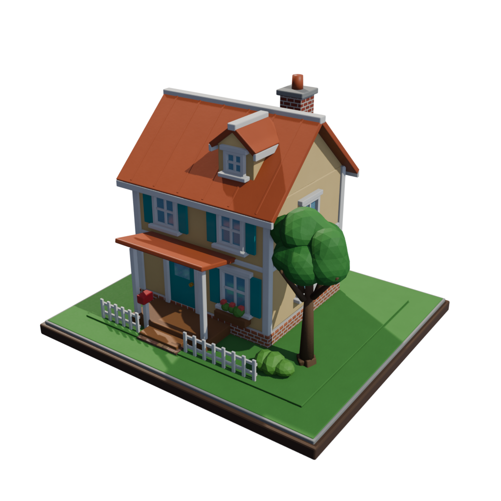
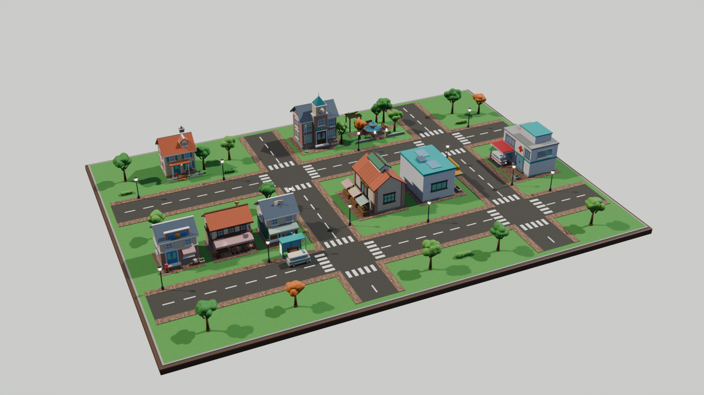
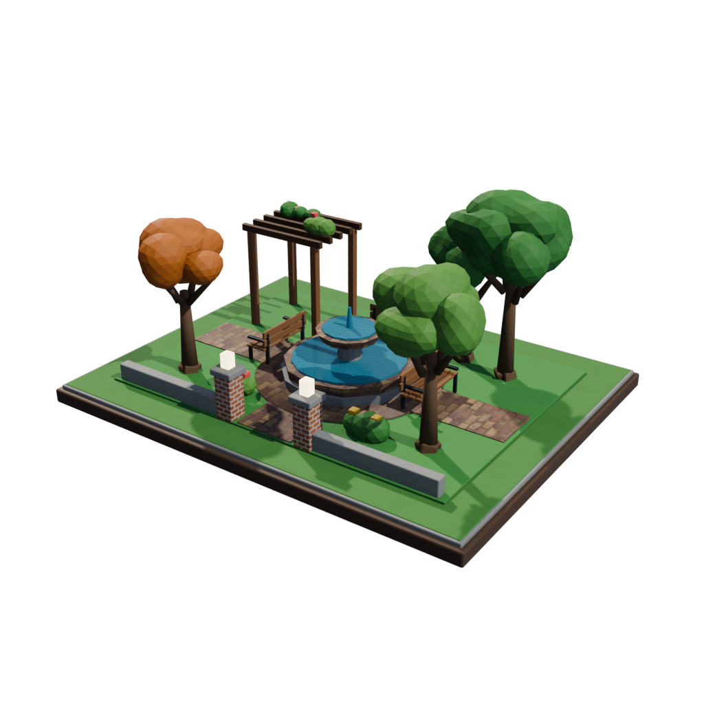
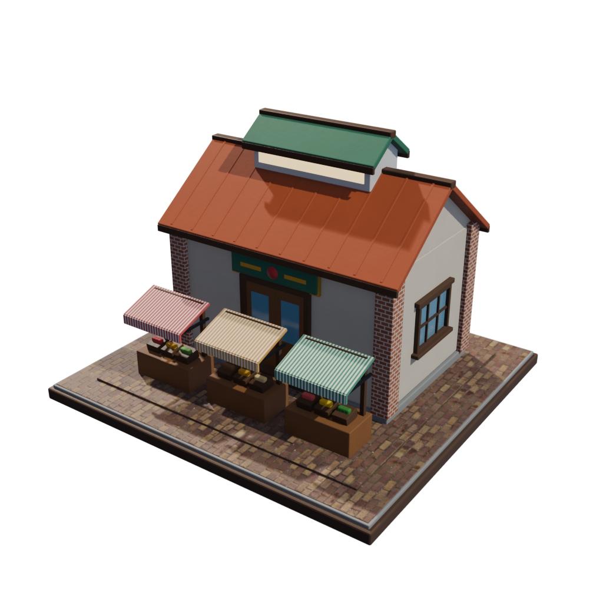
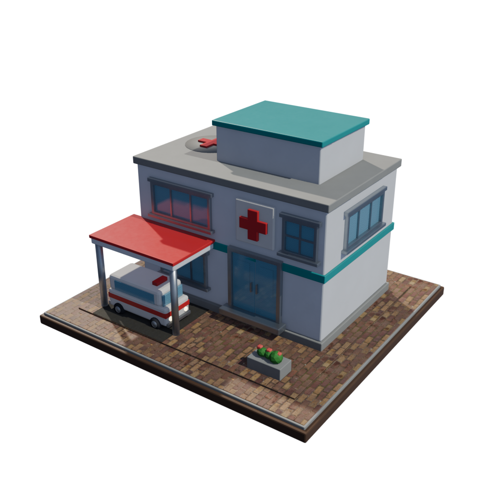
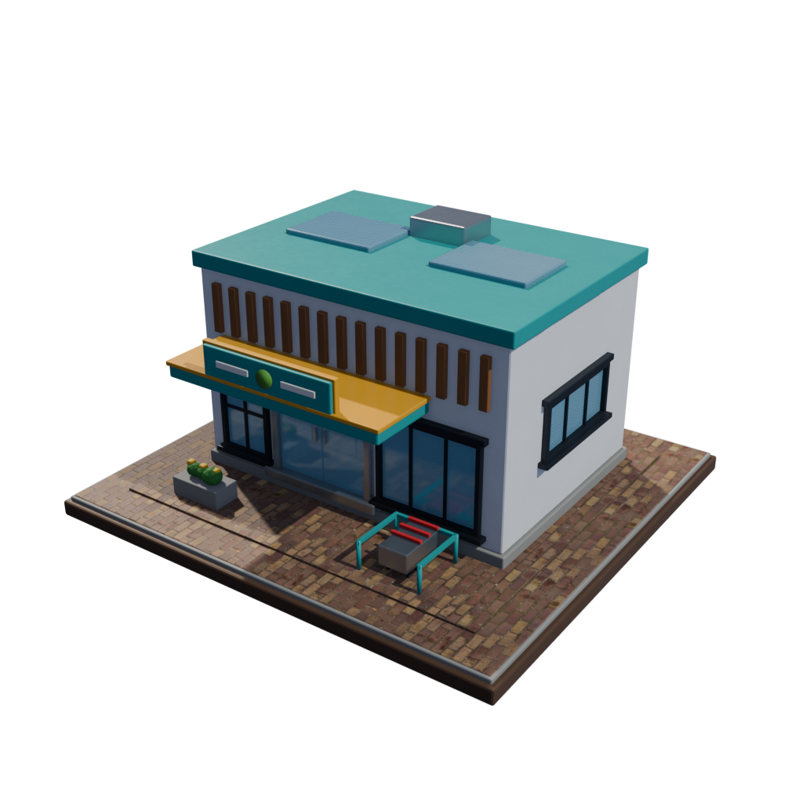
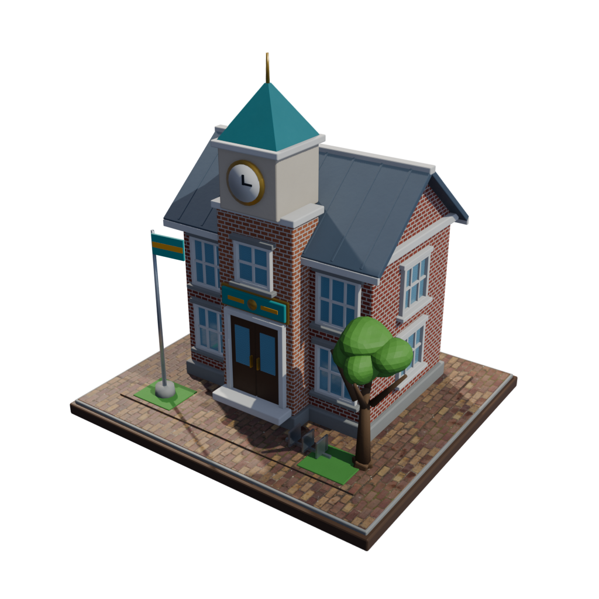

1. My House
Located on Oak Street, near the school.
Let's Find the Way! (Greenleaf Neighbourhood)
An interactive 3D and street-plan presentation created by six Grade 6 students to explore ten places, spatial prepositions, and real direction routes.

Part 1: Introduction
"Hello everyone! Welcome to our neighbourhood. This is our map. It shows some interesting places in our neighbourhood. Let's have a look!"


Part 2A: Designing the Map
Part 2B: Places Specimen Gallery
Part 2B: Spatial Prepositions
"The school is next to the park."
Part 2C: Pair 1 Directions

Part 2C: Pair 2 Directions


Part 2C: Pair 3 Directions

Language Review
Group Accountability
| Member | Role | Assigned Tasks | Speaking Turns | Contribution |
|---|
Part 3: Conclusion
"That is our neighbourhood map. We hope you like it. Thank you for listening!"
Ask our group how to get to any building in Greenleaf Neighbourhood and we will trace the route live on our interactive atlas.